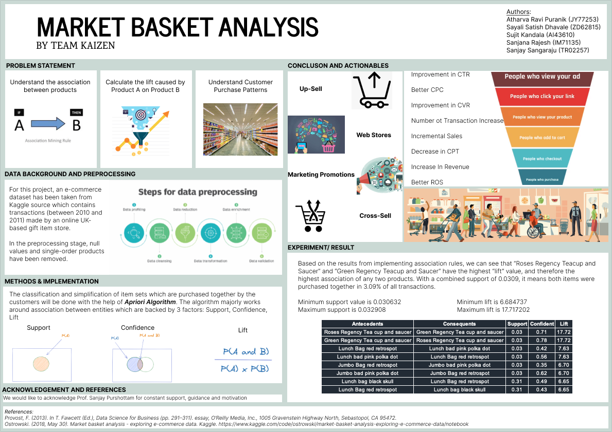

Sales Forecasting
Advanced AI Project
In the dynamic retail landscape, precise demand forecasting is a strategic imperative. This project addresses the pressing need for Corporación Favorita, a leading Ecuadorian grocery retailer, to predict unit sales accurately. The goal is to optimize inventory management, minimize financial risks, and enhance overall customer satisfaction.
In the pursuit of optimizing sales forecasting for Favorita, this project explores a diverse range of models, evaluates their performance, and ultimately selects the best-suited model for production. The journey involves a critical review of traditional and advanced forecasting methods, emphasizing the importance of adaptability and accuracy in a dynamic retail environment.
Air Quality Analysis
Data Science and Statistics Project

As urbanization accelerates, understanding and mitigating the impact of air pollution on public health become paramount. This project focuses on conducting a comprehensive analysis of air quality in Los Angeles, utilizing data science tools and Python programming to assess the health implications of pollution.
In the pursuit of assessing air quality in Los Angeles, this project adopts a multidisciplinary approach, combining Python programming, data science tools, and interactive visualizations. The exploration of diverse modeling techniques and the incorporation of sensitivity analyses contribute to a comprehensive understanding of the factors influencing air pollution. This project stands as a testament to the power of data science in addressing critical environmental challenges and fostering a healthier, more sustainable future.
Product Recommendation System
Data Science Project

In the dynamic realm of E-commerce, understanding customer purchasing patterns is critical for boosting sales and enhancing customer satisfaction. This project delves into Market Basket Analysis, specifically utilizing the Apriori Algorithm, a powerful tool for association rule mining. The primary goal is to uncover relationships between products and predict the likelihood of items being purchased together.
Market Basket Analysis, powered by the Apriori Algorithm, serves as a valuable tool for E-commerce retailers seeking to understand and leverage customer purchasing patterns. The insights derived from this analysis not only empower retailers to make data-driven decisions for product placement and promotions but also contribute to a more personalized and satisfying shopping experience for customers. This project underscores the potential of data mining techniques in shaping the dynamics of online retail.